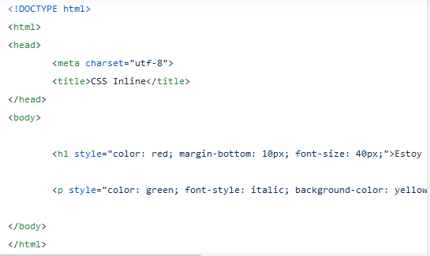
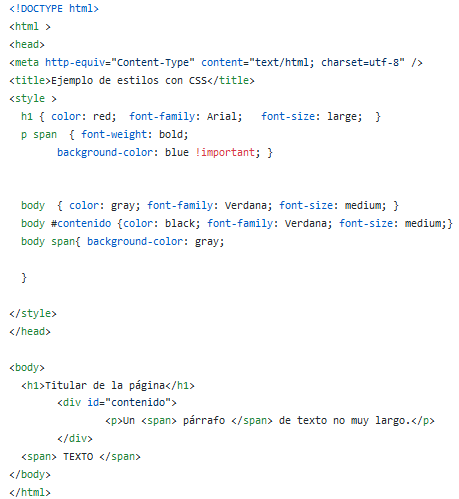
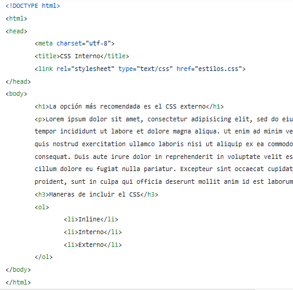

¿Qué es CSS y para qué sirve?
La solución vino de la mano de CSS,un lenguaje de marcas enfocado a definir, crear y mejorar la presentación de un documento basado en HTML. Para muchos diseñadores gráficos CSS significó la puerta de entrada al mundo de la web y junto con otras tecnologías como JavaScript, CSS se ha ido imponiendo como uno de los pilares imprescindibles de la web de hoy en día.
¿Qué significan las siglas del acrónimo CSS
CSS, siglas en inglés de Cascading Style Sheets, en español "Hojas de estilo en cascada"
Breve historia de CSS
CSS se creó para cubrir la necesidad de definir un mecanismo que permitiera aplicar diferentes estilos a los documentos. Este lenguaje se impulsó con el crecimiento del lenguaje HTML. La guerra de navegadores y la falta de un estándar que definiera los estilos, dificultaba la creación de documentos con la misma apariencia en diferentes navegadores. El organismo W3C (World Wide Web Consortium) es el encargado de crear los estándares relacionados con programación Web, se le propusieron varias propuestas de hojas de estilo. Las dos propuestas que se tuvieron en cuenta son: CHSS (Cascading HTML Style Sheets) y SSP (Stream-based Style Proposal). Estas dos propuestas se unieron entre 1994 y 1995 por Håkon Wium Lie y Bert Bos y definieron un lenguaje con lo mejor de cada una este fue llamado CSS. En 1995, W3C aposto por este lenguaje y lo estandarizo. En 1998 se publicó la segunda versión de este lenguaje que fue llamada CSS nivel2. Es la versión que se utiliza actualmente en los navegadores. Y ese mismo año se empezó con el desarrollo de CSS nivel 3 que continua en desarrollo actualmente, solo se han publicado borradores.
Formas de aplicar CSS
Ya hemos visto que existen estilos por defecto que aplican automáticamente los navegadores web
cuando no hay estilos especificados, así como que podemos embeber código CSS en las propias etiquetas de
HTML. La manera de aplicar los estilos en CSS son los siguiente:
a. CSS en línea
Los estilos en línea son declaraciones CSS que se integran en las etiquetas HTML mediante el atributo style.
Este método tan solo afecta al elemento en el que se integra el código.Ejemplo:

b. CSS interno
Otra manera muy simple de añadir estilo con CSS es utilizando la etiqueta style en la cabecera head
del fichero HTML del sitio. Ejemplo:

c. CSS externo
Mediante hojas de estilo externas se consigue separar el archivo de estilos del fichero HTML.
El archivo de estilos cuenta con la extensión .css y se referencia desde HTML mediante el elemento link.
Este es el método recomendado para aplicar estilos a una página web. Ejemplo:

Que es un comentario y como se escribe en CSS
Los comentarios son usados para añadir notas explicatorias o prevenir que el navegador interprete
partes de la hoja de estilos. Los comentarios se pueden colocar en cualquier espacio en blanco que
se permita en la hoja de estilos. Se escriben de la siguiente manera:
/* Comentario */